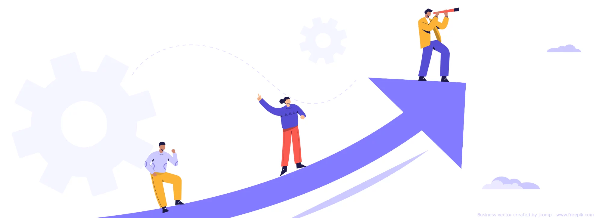

Mon parcours professionnel
J'ai commencé mon parcours par une formation militaire de deux ans avant de reprendre mes études et d'intégrer l'école 42 Paris.
Actuellement, je poursuis mes études en parallèle de mon activité de freelance, en entamant ma deuxième année de master en Machine Learning et Data.
Poursuivre mes études dans la recherche, c'est :
- Me tenir informée des innovations et avancées technologiques
- Continuer d'apprendre auprès d'experts et de mentors
- Prendre le temps d'acquérir des compétences approfondies sur des sujets variés
J’ai eu l’opportunité de travailler pour de grandes entreprises dans le domaine de la recherche et du machine learning, notamment en tant que chercheuse et software engineer. Ces expériences me permettent d'avoir une expertise en programmation et une compréhension profonde de l'IA.
J’ai développé une double compétence en recherche et en code, me permettant d’être autonome dans ma réflexion et d’intégrer de manière durable et optimisée l’IA dans vos projets.
---Expériences professionnelles
üîπ R&D Engineer - (2024 - 2025)
- Exploration de nouvelles approches pour améliorer la précision des modèles.
- Fine-tuning et évaluation de modèles Transformers.
- Optimisation des performances et réduction des coûts de calcul (PEFT).
- Développement backend avec Django.
- Conception et gestion de datasets : nettoyage des données et visualisation.
üîπ Machine Learning Software Engineer - (2023 - 2024)
- Déploiement et intégration de LLMs avec Hugging Face.
- Développement de systèmes RAG intégrant embeddings, retrieval et NLP.
- Optimisation des prompts.
- Développement et containérisation d’applications avec FastAPI et Docker.
- Évaluation des modèles et benchmarking avec Ragas et SKlearn.
Langues Parlées
- üá´üá∑ **Fran√ßais** ‚Äì C2 (Natif)
- üá¨üáß **Anglais** ‚Äì C1 (Fluent)
- üá®üá≥ **Mandarin** ‚Äì B1 (Interm√©diaire)
Mes projets :
LaijaAI

LaijaAI est un assistant qui génère un personnage.
Donnez-lui une backstory, un caractère et elle l'interprétera avec justesse !
- Frontend: React
- Backend: Django
- API AI: FastAPI
- DB:
- Containérisation: Docker
Pong Online

Pong Online est un website qui permet de faire des parties de pongs en ligne.
Il dispose egalement d'une messagerie instantane.
- Frontend: React
- Backend: NestJS
- DB: Postgres
- Containérisation: Docker Compose
- Authentification: 2FA
Pour la partie pong et la messagerie instantane, le protocole utilise est websocket
Pour le reste, c'est REST API.